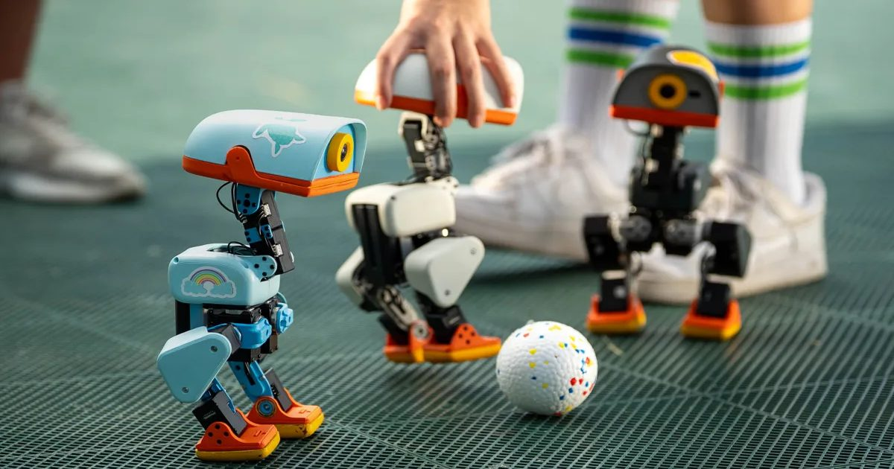

Самая горячая игрушка на Рождество? Генеральный директор Nvidia играет с очаровательными роботами Microduck, 20 000 проданных
Роботы, топая маленькими ногами и издавая крошечные звуки R2-D2, сели, упали замертво, чтобы «вздремнуть», и летом сатились на голосовую команду.